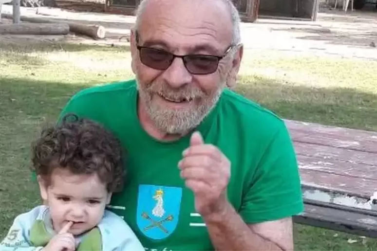

Texto de Atualidades
A Guerra de Israel - Hamas: reflexões, radicalismos e consequências no mundo

Qual é o pano de fundo do grupo palestino Hamas e o que está por trás de seu último ataque a Israel?
O grupo palestino Hamas, que controla a Faixa de Gaza, lançou em 7 de outubro um ataque surpresa a Israel, matando mais de 1.400 e capturando reféns. Israel reagiu com bombardeios que já mataram mais de 4.000 e, em 14 de outubro, anunciou para breve ofensiva por ar, terra e mar contra o território.
A seguir, um resumo do conflito até agora.
O que está acontecendo na Faixa de Gaza?
Israel deu um ultimato aos moradores no norte da Faixa de Gaza — cerca de 1,1 milhão de pessoas — para se deslocarem para o sul do território.
O governo israelense quer que todos estejam ao sul de um curso d'água conhecido como Wadi Gaza.
A ONU disse que isso não é possível e pediu a Israel que retirasse a ordem, alertando para "consequências humanitárias devastadoras".
 'Dói muito ouvir as pessoas vivas embaixo dos escombros e não poder fazer nada', diz palestino em Gaza.
'Dói muito ouvir as pessoas vivas embaixo dos escombros e não poder fazer nada', diz palestino em Gaza.

O historiador do Holocausto sequestrado pelo Hamas durante ataques a Israel
 Israel: ataque surpresa do Hamas pode indicar falha na inteligência das forças israelenses A Organização Mundial da Saúde (OMS) disse que as autoridades de saúde de Gaza disseram que seria impossível evacuar pacientes vulneráveis do hospital.
Israel: ataque surpresa do Hamas pode indicar falha na inteligência das forças israelenses A Organização Mundial da Saúde (OMS) disse que as autoridades de saúde de Gaza disseram que seria impossível evacuar pacientes vulneráveis do hospital.
O Hamas, que controla a Faixa de Gaza, disse aos civis que ignorassem a ordem de evacuação, descrevendo-a como "propaganda falsa".
No entanto, muitas pessoas já deixaram suas casas.
Mulheres e crianças estavam entre os mortos de um ataque atingiu seu comboio que fugia do norte de Gaza em uma das duas rotas de evacuação.
O Ministério de Saúde Palestino, que afirmou que houve 70 vítimas, culpou Israel pelo ataque; o governo israelense disse estar investigando o ocorrido.
O norte de Gaza — que inclui a Cidade de Gaza e dois campos de refugiados — é uma das partes mais densamente povoadas do território.
Há apenas duas estradas até a zona de evacuação, e o combustível para veículos está acabando. A ala militar do Hamas, as Brigadas al-Qassam, continua a disparar foguetes contra Israel.
Como Israel poderia realizar uma ofensiva terrestre?
O objetivo declarado de Israel é destruir o Hamas.
O governo israelense deslocou dezenas de milhares de soldados para sua fronteira com Gaza, juntamente com tanques e artilharia.
Além de sua força permanente, de 160 mil militares, foram chamados cerca de 300.000 reservistas. O Exército israelense se preparou para uma ofensiva lançando 6.000 bombas em Gaza, visando comandantes do Hamas e seus centros de controle.
Um de seus principais alvos é o vasto labirinto de túneis subterrâneos do Hamas, que ligam seus postos de comando subterrâneos.
"Pense na Faixa de Gaza como uma camada para os civis e depois outra camada para o Hamas. Estamos tentando chegar à segunda camada que o Hamas construiu", disse um porta-voz das Forças de Defesa de Israel (IDF) na quinta-feira (12/10).
O Hamas já disse que os túneis se estendem por 500 km, uma extensão superior ao metrô de Londres, por exemplo.
Muitos têm entradas escondidas dentro de casas, mesquitas, escolas e outros edifícios públicos.
Os militares de Israel provavelmente evitarão entrar em túneis, a menos que seja necessário, em vez disso, usando explosivos para destruí-los.
Acredita-se que o Hamas tenha colocado armadilhas e explosivos improvisados nos pontos de entrada e ao longo de ruas estreitas.
Um grande desafio para Israel serão os combates em áreas urbanas densamente povoadas. Israel acredita que o Hamas tenha cerca de 30.000 soldados, com armas incluindo fuzis automáticos, granadas impulsionadas por foguetes e mísseis antitanque.
O que é o Hamas e o que ele quer?
Hamas quer destruir Israel
O Hamas é um grupo palestino que governa a Faixa de Gaza desde 2007.
O grupo prega a destruição de Israel e quer substituí-lo por um Estado islâmico.
O Hamas travou várias guerras com Israel desde que assumiu o poder.
Disparou — ou permitiu que outros grupos disparassem — milhares de foguetes contra Israel e realizou outros ataques mortais.
Em resposta, Israel atacou repetidamente o Hamas com ataques aéreos e enviou tropas para Gaza durante duas das guerras. Junto com o Egito, bloqueia a Faixa de Gaza desde 2007 pelo que descreve como razões de segurança.
O Hamas — ou, em alguns casos, a sua ala militar, as Brigadas Izzedine al-Qassam — foi designado grupo terrorista por Israel, Estados Unidos, União Europeia e Reino Unido, bem como outras potências.
Já o Brasil e nações como China, Rússia, Turquia, Irã e Noruega não adotam essa classificação. Historicamente, o governo brasileiro só classifica uma organização como sendo terrorista se ela for considerada assim pela Organização das Nações Unidas (ONU).
O Irã apoia o grupo, fornecendo-lhe financiamento, armas e treinamento.
O que é a Faixa de Gaza e por que ela é importante?
 Gaza é o lar de cerca de 2,2 milhões de pessoas e tem uma das maiores densidades populacionais do mundo A Faixa de Gaza é um território de 41 km de comprimento e 10 km de largura localizado entre Israel, Egito e o Mar Mediterrâneo.
Gaza é o lar de cerca de 2,2 milhões de pessoas e tem uma das maiores densidades populacionais do mundo A Faixa de Gaza é um território de 41 km de comprimento e 10 km de largura localizado entre Israel, Egito e o Mar Mediterrâneo.
Originalmente ocupada pelo Egito, Gaza foi capturada por Israel durante a guerra de 1967 (Guerra dos Seis Dias), juntamente com a Cisjordânia e Jerusalém Oriental. Israel retirou as suas tropas e cerca de 7.000 colonos da área em 2005.
Gaza é o lar de cerca de 2,2 milhões de pessoas.
Pouco mais de 75% da população do território — cerca de 1,7 milhões de pessoas — são refugiados, segundo a ONU. Mais de 500 mil deles vivem em oito acampamentos lotados localizados na Faixa de Gaza.
Israel controla o espaço aéreo sobre Gaza e a sua costa, e restringe rigorosamente o movimento de pessoas e mercadorias através das suas passagens fronteiriças.
Da mesma forma, o Egito controla quem entra e sai através da sua fronteira com Gaza.
O que é o 'cerco' a Gaza?
Após o ataque do Hamas, Israel anunciou um "cerco" a Gaza — cortando o fornecimento de eletricidade, combustível, alimentos, bens e água ao território.
Segundo o governo israelense, o cerco não terminará até que os 126 reféns sejam libertados. As famílias, os hospitais e as empresas em Gaza dependem de geradores — se tiverem acesso a combustível para fazê-los funcionar.
A fronteira entre Israel e Gaza permanece fechada. A passagem de Rafah, que é controlada pelo Egito, tem sido alvo de ataques aéreos israelenses.
O que é a Palestina?
Cisjordânia e Gaza, conhecidas como "territórios palestinos", bem como Jerusalém Oriental e Israel, fizeram parte de uma terra conhecida como Palestina desde a época romana até meados do século 20.
Estas também eram as terras dos reinos judaicos na Bíblia e são vistas por muitos judeus como sua antiga pátria.
Israel foi declarado Estado em 1948, embora a terra ainda seja referida como Palestina por aqueles que não reconhecem o direito de existência de Israel. Os palestinos também usam o nome Palestina como um termo genérico para Cisjordânia, Gaza e Jerusalém Oriental.
O presidente da Autoridade Palestina (AP) é Mahmoud Abbas, também conhecido como Abu Mazen. Ele despacha da Cisjordânia ocupada por Israel.
Abbas representa o partido político Fatah, que tem uma rivalidade acirrada com o Hamas.
Por que o Hamas lançou o seu último ataque?
Embora o ataque do Hamas de 7 de outubro tenha sido inesperado, ocorreu num momento de crescentes tensões entre Israel e palestinos.
Este ano foi o mais mortífero já registrado para os palestinianos que vivem na Cisjordânia ocupada por Israel, o que poderia ter motivado o Hamas a atacar Israel.
O grupo extremista palestino também pode ter procurado obter uma vitória de propaganda significativa para aumentar a sua popularidade.
Acredita-se que a captura de reféns israelenses visa pressionar Israel a libertar alguns dos cerca de 4.500 palestinos detidos em prisões israelenses — uma questão altamente emotiva para todos os palestinos.
Há também especulações de que o ataque foi orquestrado pelo Irã — o arqui-inimigo de Israel — embora o líder supremo iraniano, Ali Khamenei, tenha negado o envolvimento do seu país. O Irã e o Hamas também se opõem firmemente à perspectiva crescente de um acordo de paz histórico entre Israel e a Arábia Saudita.
Isto poderá ser frustrado se a resposta militar de Israel aos ataques do Hamas provocar uma ira generalizada no mundo árabe.
Como isso se compara aos ataques anteriores do Hamas?
O editor internacional da BBC, Jeremy Bowen, diz que esta é a operação mais ambiciosa que o Hamas já lançou a partir de Gaza e o mais grave ataque transfronteiriço que Israel enfrentou em mais de uma geração. Os militantes romperam a cerca de arame farpado que separa Gaza de Israel em vários lugares.
Surgiram detalhes de um massacre numa comunidade israelense, o kibutz Kfar Aza — com um general israelense falando de bebês assassinados. Soldados israelenses disseram a Jeremy Bowen que alguns dos mortos haviam sido decapitados.
Mas as Forças de Defesa de Israel disseram: "Não podemos confirmar nenhum número. O que aconteceu no kibutz Kfar Aza é um massacre no qual mulheres, crianças, bebês e idosos foram brutalmente massacrados no modo de ação do ISIS (grupo autodenominado Estado Islâmico)".
Por que o ataque do Hamas não foi previsto pela inteligência israelense?
Considerando os recursos combinados do Shin Bet, a agência de segurança interna, do Mossad, o serviço secreto, e das Forças de Defesa de Israel, o correspondente de segurança da BBC, Frank Gardner, diz ser "surpreendente" que ninguém tenha previsto o ataque ou tenha deixado de agir se foi avisado.
Israel tem, inegavelmente, os serviços de inteligência mais extensos e bem financiados do Oriente Médio, com informantes e agentes dentro de grupos militantes palestinos, bem como no Líbano, na Síria e noutros locais.
A cerca na fronteira entre Gaza e Israel possui câmeras, sensores de movimento no solo e patrulhas regulares do Exército. Acreditava-se que a cerca com arame farpado fosse uma "barreira inteligente" para evitar exatamente o tipo de infiltração que ocorreu neste ataque. Mas os integrantes do Hamas simplesmente abriram caminho através dela ou entrando em Israel pelo mar e por parapente.